Creating 3D Models in CityEngine in San Juan County, Washington
1 Procedure
1.1 Requirements
- GIS Data
Roads, Parcels, Building Footprints, Imagery, 2013 LiDAR data
- Software
ArcGIS v10.1+ with 3D Analyst Extension
Esri CityEngine 2014 (county employees should contact the GIS department for a license)
- Redlands Redevelopment Tutorial
1.2 Prepare the data
- Open a new MXD and add Roads, Parcels, Building Footprints and Imagery
- Create a Staging Folder for the data to be imported into CityEngine and save the MXD in that folder.
- Create a Staging File Geodatabase in the Staging folder created in the last step.
- Create a new polygon feature class in the file geodatabase created in the previous step. Name it Data_Extent.
- Add the Data_Extent feature class to your MXD and start editing.
- Create a new rectangle polygon in the Data_Extent feature class and draw the box around the data you want to use in CityEngine. Typically this should be a small area of only a few blocks. Too much data may cause performance issues. Stop editing and save your edits.
- Use the Clip geoprocessing tool to clip the Roads, Parcels and Building footprints feature classes to the Data_Extent polygon. Save the results in the staging file geodatabase.
- Since we don't have an existing Tree inventory, create a new point feature class in the staging file geodatabase called "Trees". You may want to Import fields from the trees feature class in the Redlands Redevelopment Tutorial.
- Add the new Trees feature class to your MXD and use aerial imagery to place tree locations. You may want to symbolize the points using a 2D tree symbol. You don't have to fill in the attribute table to move on.
- Make sure the 3D Analyst extension is enabled in ArcMap by going to Customize - Extensions and making sure the 3D Analyst extension is checked.
- Create a new LAS Dataset in the staging folder. Use the tips here. County staff can use this existing 2013 LiDAR Dataset (.lasd).
- Add the LAS dataset to your MXD and enable the LAS Dataset toolbar.
1.3 Create elevation rasters
- Select your LAS dataset in the dropdown box in the LAS Dataset toolbar, click on the Filters box and select Ground.
- Run the LAS Dataset to Raster geoprocessing tool (Under Conversion Tools - To Raster) using the following options to create a Digital Terrain Model (DTM) showing the elevation of only the ground.
- Input LAS Dataset: <Select your LAS Dataset from dropdown list>
- Output Raster: Save to your staging file geodatabase as DTM
- Value Field: ELEVATION
- Interpolation Type: Triangulation with NATURAL_NEIGHBOR interpolation method and NO_THINNING.
- Output Data Type: FLOAT
- Sampling Type: CELLSIZE
- Sampling Value: 3
- Z Factor: 1
- VERY IMPORTANT: Click on the Environments button and set the Processing Extent to the Same as your Data_Extent layer. This will ensure you only create a DTM for your area of interest rather than spending hours creating a countywide DTM.
- Again, select your LAS dataset in the dropbox box on the LAS Dataset toolbar. This time set the Filter to First Return.
- We'll run the LAS Dataset to Raster geoprocessing tool again but with different parameters as below to create a Digital Surface Model (DSM) showing elevation of objects.
- Input LAS Dataset: <Select your LAS Dataset from dropdown list>
- Output Raster: Save to your staging file geodatabase as DSM
- Value Field: ELEVATION
- Interpolation Type: Binning with MAXIMUM cell assignment type and NATURAL_NEIGHBOR void fill method.
- Output Data Type: FLOAT
- Sampling Type: CELLSIZE
- Sampling Value: 3
- Z Factor: 1
- VERY IMPORTANT: Click on the Environments button and set the Processing Extent to the Same as your Data_Extent layer. This will ensure you only create a DSM for your area of interest rather than spending hours creating a countywide DSM.
- Next, we want to create a Normalised Digital Surface Model (nDSM) to get heights of objects above the ground. We do this using the Minus geoprocessing tool under 3D Analyst Tools - Raster Math. Use the options below.
- Input Raster or Constant Value 1: Your DSM
- Input Raster or Constant Value 2: Your DEM
- Output Raster: Save to your staging file geodatabase as nDSM
- Finally, we'll create a .tif file of our DTM. Open the Clip geoprocessing tool under Data Management Tools - Raster - Raster Processing and set the following parameters.
- Input Raster: Your DTM layer
- Output Extent: Your Data_Extent layer
- Rectangle: Ignore this. The numbers are automatically filled in
- Output Raster Dataset: DTM.tif in your staging folder (not in geodatabase)
- Leave other values as default
1.4 Determine elevation of buildings
Now we have a normalised digital surface model we can use to determine the heights of buildings by sampling at random locations.
- Find and open the "Create Random Points" geoprocessing tool under Data Management Tools - Feature Class. Use the following parameters.
- Output Location: Your staging file geodatabase
- Output Point Feature Class: Random_Points
- Constraining Feature Class: Building Footprints
- Number of Points: Long option, value 100
- Minimum Allowed Distance: Linear unit set to 0 Meters
- Next we'll use the normalised DSM to assign height values to those points. Open the Add Surface Information geoprocessing tool under 3D Analyst Tools - Functional Surface and use the following parameters.
- Input Feature Class: Select Random_Points from the dropdown
- Input Surface: This is your nDSM raster dataset
- Output Property: Check the box for Z
- Method: BILINEAR
- Sampling Distance: Leave blank
- Next we'll find the average height of the Random_Points for each building using the Summary Statistics geoprocessing tool under Analysis Tools - Statistics. Use the following parameters.
- Input Table: Random_Points
- Output Table: Summary_Statistics.dbf in your staging folder
- Statistics Field(s): Field Z, Statistic Type MEAN
- Case Field(s): CID
- The new table has a MEAN_Z field showing the average height for each building. Note: Large trees next to buildings can sometimes skew this number since the trees and buildings cannot be differentiated in the normalised digital surface model. You can manually look for and delete outlier points from the Random_Points before running the Summary Statistics tool.
- Next we'll assign each building its average height. Use the Add Join geoprocessing tool under Data Management - Joins with the following parameters.
- Layer Name or Table View: Your Building Footprints layer
- Input Join Field: ObjectID
- Join Table: Summary_Statistics.dbf
- Output Join Field: CID
- Now examine the attribute table for Building Footprints. You should see a MEAN_Z field added to each feature.
- Now we'll create a new feature class from this called Buildings_Final. Right click on the Building Footprints layer and choose Data > Export Data. Save the new feature class to your staging file geodatabase but don't add it to the MXD yet.
- Find the new Buildings_Final feature class in ArcCatalog or your Catalog window in ArcMap. Open the properties of the feature class and go to the fields tab. Rename the MEAN_Z field and field alias to totalHeight.
- Now add the Buildings_Final feature class to your MXD and open the attribute table.
- The CityEngine tools we'll be working with were developed in Europe and they don't use our imperial measurement system. So we need to change our heights from feet to meters. Right-click on the totalHeight field in the attribute and select Field Calculator. Click Yes on the warning dialog box to continue.
- In the Field Calculator's expression box type "[totalHeight] * 0.3048" and click "OK". This will convert the heights from feet to meters.
1.5 Get an aerial image for your Area of Interest
CityEngine doesn't work well with large rasters. So we'll create a lower resolution JPG of our area of interest.
- Turn off all layers in your MXD except the aerial photo.
- Click on File - Export Map and use the following parameters to export a georeferenced aerial image to your staging folder.
- File name: Orthophoto.jpg
- Save as type: JPEG
- General Tab
- Resolution: 100-150 dpi
- Check the box for "Write World File"
- Format Tab
- Color Mode: 24-bit True Color
- JPEG Quality: About 75 is good
- Background Color: White
- Check the box for "Progressive"
- After you save, check the size of your JPG image. For best results, try to keep it between 500KB - 1MB. You may have to raise or lower the resolution to get the optimal size.
- Add the image to ArcMap and check that it's properly referenced to your data. If it isn't, go back and make sure you selected "Write World File" when you exported the image.
- Now we'll clip the image to match our DTM. Open the Clip geoprocessing tool located in Data Management Tools - Raster - Raster Processing. Set the following parameters.
- Input Raster: Orthophoto.jpg
- Output Extent: Your DTM layer
- Rectangle: Ignore. It's automatically populated
- Output Raster Dataset: Orthophoto_final.jpg in your staging folder
- Other options leave as default.
1.6 Setting up Esri CityEngine with your GIS data
I have only tested these steps with the Advanced version of CityEngine, but I believe they should work with the Basic version, too.
- If you haven't already done so, download and extract the Redlands Redevelopment tutorial data from here.
- Open CityEngine 2014 and go to File-New and create a new CityEngine Project. Name it after your area of interest (ex. Eastsound, LopezVillage, FridayHarbor). You may also want to change the default location.
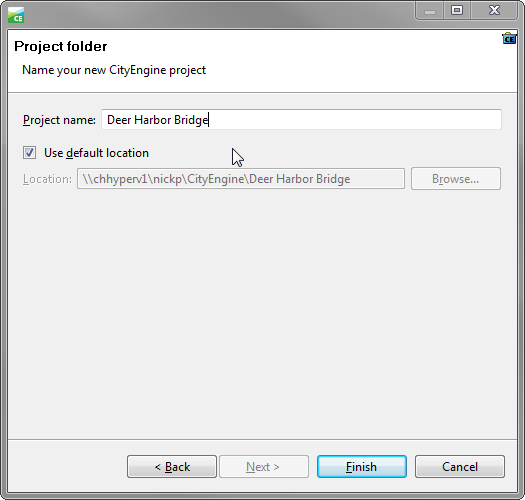
- Expand your new project in the Navigator window and right-click on the "scenes" folder. Create a new CityEngine scene and name it something like "Existing Conditions.cej". Set the coordinate system to match your data (i.e. EPSG:2285).
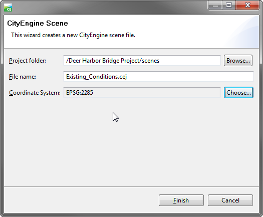
- In the Navigator window, right-click the top level folder that is the name of your project and select Import.
- On the Import wizard, select Archive File under the Files into Existing Project folder. Then click Next.

- Browse for the location you downloaded the Redlands Redevelopment data to and open the folder called 3D_City_Design_Training and double-click the file named DataForCityEngineImport.zip.
- Select the top level folder in the left pane and click the "Deselect All" button to remove all checkboxes.
- Now expand the top level folder and check only the boxes for "assets", "bin", "maps" and "rules". The Into folder box should be the name of your project. Click Finish.
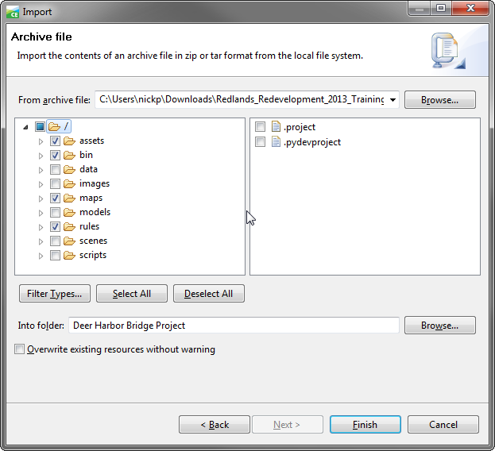
- When the tutorial data is done importing, we'll want to import our GIS data.
- Right-click on the "data" folder in your project and select Import.
- Under CityEngine layers, select File GDB Import and click Next.

- Locate your staging file geodatabase using the Browse button.
- Check only the boxes for the Roads, Buildings_Final, Parcels and Trees layers.
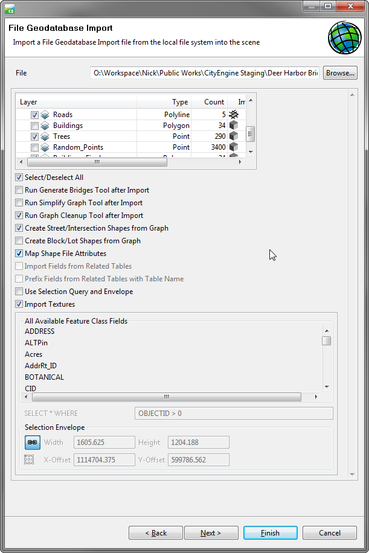
- Leave all other settings default and click Finish. Now you should see nodes and shading in the Viewport window.
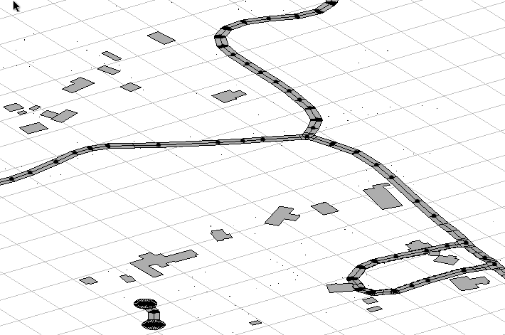
- Navigate to your staging folder in Windows Explorer. Select the DTM.tif and Orthophoto_final.jpg and right-click and select Copy.
- Now navigate to your CityEngine project folder in Windows Explorer. Open the "maps" folder and paste the DTM.tif and Orthophoto_final.jpg files in there.
- Back in CityEngine, right click on the "maps" folder in the Navigator window and select Refresh. You should see both files in there now.
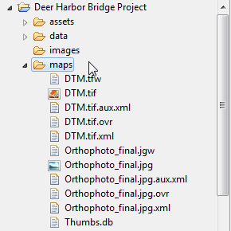
- Notice the Scene window. You can turn on or off layers by clicking the eye icons next to them.
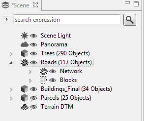
1.7 Making it pretty in CityEngine
- Click on File and select Import.
- Under CityEngine Layers, select Terrain Import and click Next.
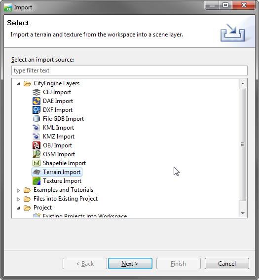
- For the Heightmap file browse to the "maps" folder and select DTM.tif.
- For the Texture file use the Orthophoto_final.jpg also located in the "maps" folder.
- Leave the other settings as default and click Finish.
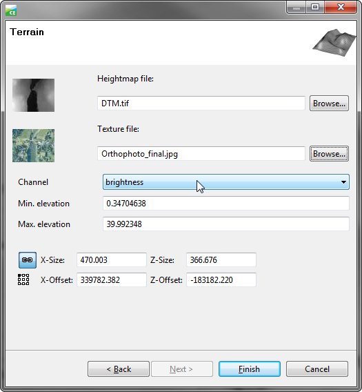
- Right-click on the Terrain DTM layer in the Scene window and select "Frame Layer" to view the extent.
- In the Scene window, right-click on Roads and select "Align Graph to Terrain". Use the following parameters:
- Align function: Project All
- Heightmap: Terrain DTM
- Your Roads layer should now be draped over the terrain.
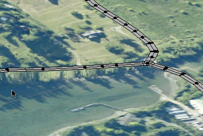
- Select all streets by right-clicking Roads again and choose Select - Select Objects in Same Layer.
- Then click the "Align Terrain to Shapes" tool on the toolbar.

- Set the following parameters for Align Terrain to Shapes
- Terrain: Terrain DTM
- Raise Terrain, Lower Terrain, Add border: All checked
- Maximal raise distance and Maximal lower distance: 100
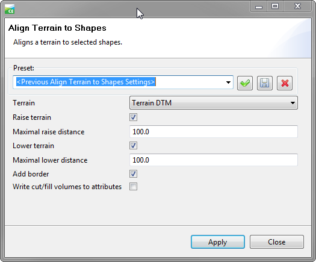
- Now we'll align the other vector data. Hold Ctrl and select Buildings and Trees in the Scene window.
- Right-click the selected layers and choose "Align Shapes to Terrain". Use the following parameters:
- Align function: Translate to Maximum
- Heightmap: Terrain DTM
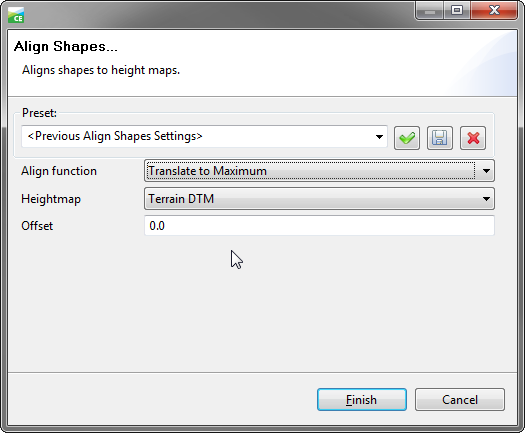
- Now the buildings and trees layer are draped on top of the terrain.
- Next, we'll assign rules to the GIS Data to create 3D models.
- Right-click the Buildings layer in the Scene window and select "Assign Rule File".
- In the 3D_City_Design_Rules folder double-click on Building Construction.cga.
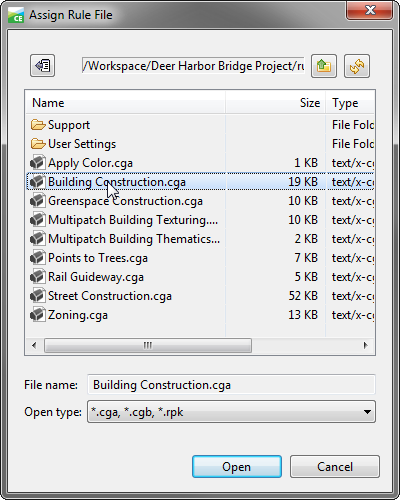
- Right-click the Buildings layer again and this time, select "Generate". The buildings should start to extrude.
- Right-click the Buildings layer and click "Select - Select Objects in the Same Layer".
- In the Inspector window, find and expand the "Zoning" tab. Under "3D FORM HEIGHT LIMIT" set "Height_Method" to "Limit Height to Max_Height".
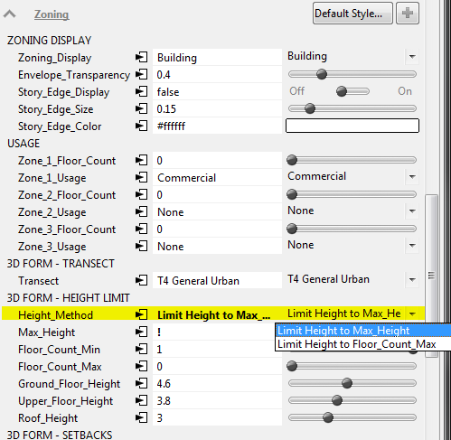
- Also under "3D FORM HEIGHT LIMIT" click on the Attribute Connector button next to "Max_Height".
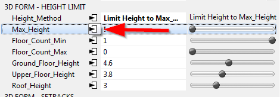
- In the Attribute Connection Editor window, change the selected button to "Layer attribute". Set the following parameters:
- Select Layer: Buildings
- Select Source: totalHeight
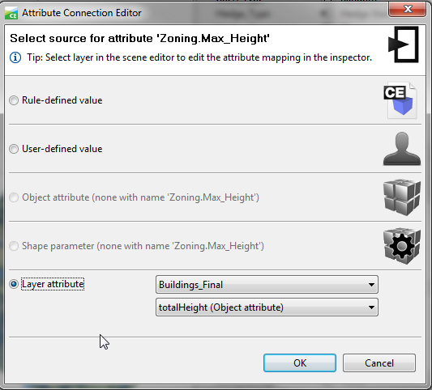
- Now the buildings should be the correct heights.
- While the buildings are still selected, click the "Align Terrain to Shapes" button on the toolbar. Leave the default settings.
- Again, with the buildings still selected, open the Facade Construction tab in the Inspector Window. Set the "Generate_Facades" switch to "On".
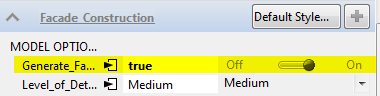
- Optionally, change the Wall_Texture under "Facade Construction - WALLS" to your desired look.
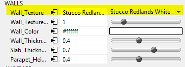
- Right-click the Roads layer in the Scene window and "Assign Rule File", choosing "Street Construction.cga".
- Right-click the Roads layer and click "Generate".
- Right-click the Trees layer and choose the "Points to Trees.cga" rule to assign to it. Then Generate the trees.
- The Trees may appear with black wireframes. Click the "View Settings" button on the toolbar and click "Wireframe on Shaded/Textured" to toggle it off.
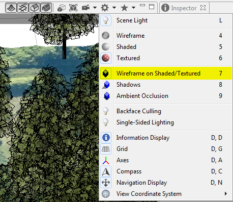
- Optionally, select all or individual trees and change the Name and Height in the "Tree" tab of the Inspector window. Remeber, heights are in meters, not feet.
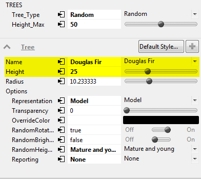
1.8 Sharing your CityEngine Model
Now we'll share our 3D Model to ArcGIS Online as a web scene so others can view it.
- Use the Move tools on the toolbar to pan, zoom and rotate your view.
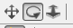
- Click the "Bookmark" button on the toolbar to save a view. This will be a selectable option in the web scene. Do this several times with different views.
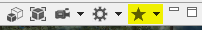
- Now, turn on all layers in the Scene window that you want in the web scene.
- Right-click inside the viewport window and click "Select - Select All".
- In the File menu, click "Export Models".
- For the Model Export, choose "CityEngine Web Scene" and click "Next".
- Use the following parameters for the "CityEngine WebScene" dialog box.
- Output Path: <Use the "models" folder in your workspace>
- Scene Name: <The name of your scene>
- Exported Content: Export Generatable Models
- Terrain Layers: Export all visible terrain layers
- Leave default settings for the rest and click "Next"
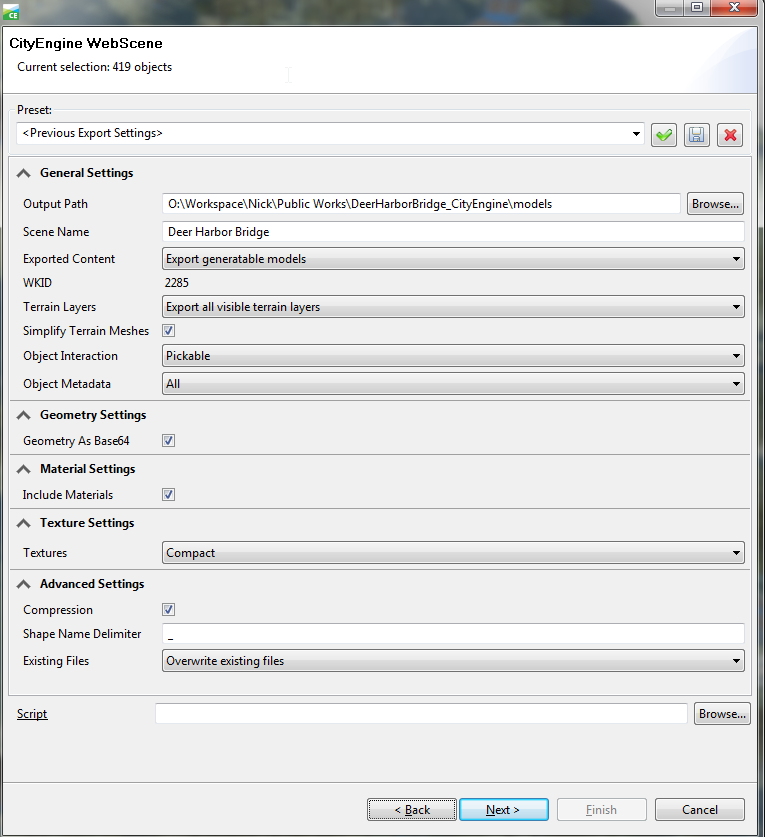
- Make sure all layers are enabled in the "Per Layer Options" dialog box and click "Finish".
- Next we'll view the web scene before sharing it. NOTE: At the time of writing, only Mozilla Firefox and Google Chrome can view the web scenes. Internet Explorer will not work. Please inform the people you share with.
- Under the "File" menu, click "Refresh Workspace".
- In the Navigator window, expand the "models" folder in your workspace.
- Right-click the 3ws file, select "Open With - 3D Web Scene Viewer (Offline)". The web scene should open in Firefox or Chrome.
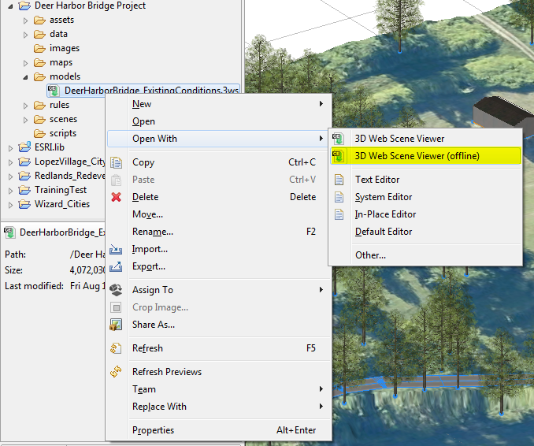
- If the Web Scene doesn't load in either Firefox or Chrome, you may need to update your video card drivers. See your IT person for help.
- Look for your bookmarks. They should appear as selectable thumbnails at the bottom of the webscene.
- Pan and rotate around the web scene by holding different mouse keys and dragging the mouse. Zoom in or out using your mouse wheel.
- You can turn layers on and off by clicking the "eye" icons on the right side of the web scene.
- Open the "Settings" tab and check the boxes under "Shadowing". Drag the Sunlight slider to alter the lighting.
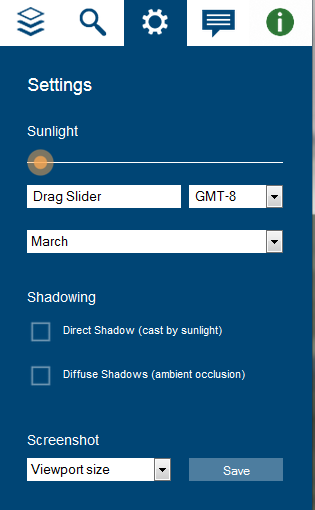
- To share the web scene with others you have to upload it to ArcGIS Online.
- If you don't have an ArcGIS Online account, check with your GIS Staff or Esri Account Manager to get one set up.
- Back in CityEngine, click "File - Sign In…" and enter your ArcGIS Online account information.
- Right-click on the 3ws file in the "models" folder and select "Share As".
- In the CityEngine Web Scene Package dialog box, select "Upload package to my ArcGIS Online or Portal account".
- On the left, select "Item Description" and fill in details about your web scene.
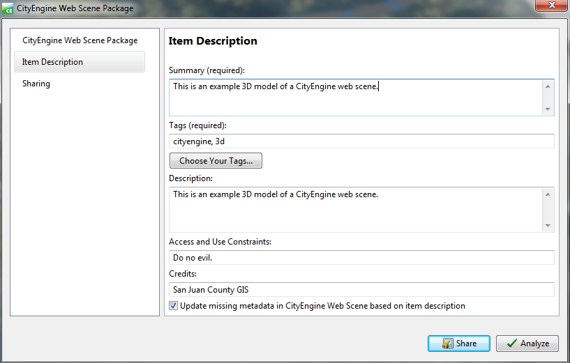
- On the left again, select the "Sharing" tab and check the box for "Everyone (public)".
- Finally click the "Share" button to upload your web scene.
- After the upload succeeds, open http://arcgis.com/home/ in Firefox or Chrome and sign in to your account.
- Once you are signed in type the name of your 3ws file in the Search box at the top right and click Enter.
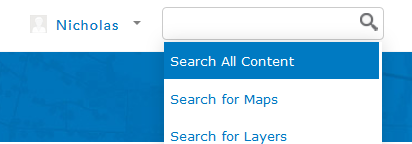
- Click on the "Open" link below your scene icon to open the web scene.
- Copy the entire URL text in the URL bar and paste into an email to share the web scene with others.
2 CityEngine Resources
- Quick intro to CityEngine and brief tutorials
- Redlands Redevelopment Tutorial I found this one extremely helpful